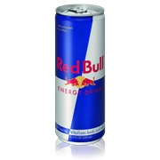

The beginning
Original
Still in the U.S. lineup
- U.S. debut
- 1997
- U.S. status
- No U.S. retirement announced
What happened & sources
The original blue-and-silver can arrived in the United States in 1997. The flavor history starts here, before the colored Editions.
Can reference: Collector reference via List Challenges. Packaging can differ by year or market; the dates above describe the U.S. release.